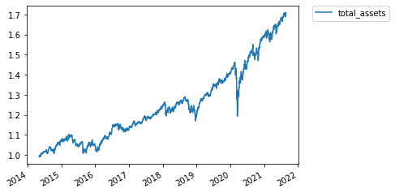
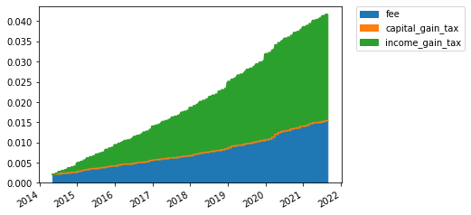
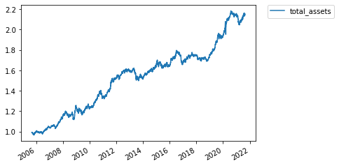
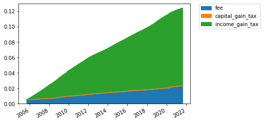
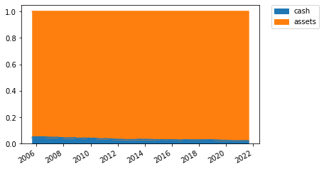

World Balanced Portfolio¶
[14]:
# If you would like to refresh your data, please execute the bellow codes.
import pandas as pd
import numpy as np
from datetime import datetime
from tqdm import tqdm
import matplotlib.pyplot as plt
from mypo import split_k_folds, select_by_regression
from mypo.optimizer import RiskParityOptimizer
from mypo.rebalancer import MonthlyRebalancer
from mypo.evacuator import FixedEvacuator
from mypo import Runner
from mypo import Loader
DOWNLOAD = False
if DOWNLOAD:
loader = Loader()
loader.get('VTI', 0.05 * 10e-3) # market
loader.get('VB', 0.08 * 10e-3) # size
loader.get('VTX', 0.08 * 10e-3) # value
loader.get('VBR', 0.08 * 10e-3) # size - value
loader.get('MTUM', 0.15 * 10e-3) # momentum
loader.get('QUAL', 0.15 * 10e-3) # quality
loader.get('IEF', 0.15 * 10e-3)
loader.get('DBV', 0.76 * 10e-3) # carry
loader.get('SPY', 0.09 * 10e-3)
loader.get('TLT', 0.15 * 10e-3)
loader.get('GLD', 0.4 * 10e-3)
loader.save('/app/docs/tutorial/factor_portfolio.bin')
loader = Loader.load('/app/docs/tutorial/factor_portfolio.bin')
factor_market = loader.filter(['VTI', 'VBR', 'MTUM', 'QUAL', 'TLT', 'DBV']).get_market()
us_market = loader.filter(['SPY', 'IEF', 'TLT', 'GLD']).get_market()
Factor Investement¶
[15]:
folds = split_k_folds(factor_market, 1, 200)
fold = folds[0]
optimizer = RiskParityOptimizer()
runner = Runner(
rebalancer=MonthlyRebalancer(optimizer=optimizer, evacuator=FixedEvacuator(level=0.05)),
)
runner.run(
fold=fold,
verbose=True
)
report = runner.report()
display(report.summary())
display(report.annual_summary())
ax = report.history_assets().plot()
plt.legend(bbox_to_anchor=(1.05, 1), loc='upper left', borderaxespad=0)
plt.show()
ax = report.history_weights().plot.area(stacked=True)
plt.legend(bbox_to_anchor=(1.05, 1), loc='upper left', borderaxespad=0)
plt.show()
ax = report.history_cost().plot.area(stacked=True)
plt.legend(bbox_to_anchor=(1.05, 1), loc='upper left', borderaxespad=0)
plt.show()
ax = report.history_cash_vs_assets().plot.area(stacked=True)
plt.legend(bbox_to_anchor=(1.05, 1), loc='upper left', borderaxespad=0)
plt.show()
100%|██████████| 1842/1842 [00:23<00:00, 76.82it/s]
| tickers | yearly total return | sharpe ratio | max draw down | max draw down span | |
|---|---|---|---|---|---|
| 0 | [VTI, VBR, MTUM, QUAL, DBV, TLT] | 1.076783 | 0.697602 | 0.815822 | 303 |
| return | std | sharpe ratio | draw down | |
|---|---|---|---|---|
| 2014-12-31 | 0.079350 | 0.051691 | 1.148168 | 0.966899 |
| 2015-12-31 | -0.025128 | 0.075611 | -0.596849 | 0.914493 |
| 2016-12-31 | 0.083227 | 0.064894 | 0.974306 | 0.921371 |
| 2017-12-31 | 0.094777 | 0.041735 | 1.791732 | 0.979006 |
| 2018-12-31 | -0.029026 | 0.079609 | -0.615840 | 0.907386 |
| 2019-12-31 | 0.174661 | 0.055071 | 2.808378 | 0.927131 |
| 2020-12-31 | 0.122672 | 0.147573 | 0.695735 | 0.815822 |
| 2021-12-31 | 0.074766 | 0.077737 | 0.704503 | 0.962382 |



US Market¶
[17]:
folds = split_k_folds(us_market, 1, 200)
fold = folds[0]
optimizer = RiskParityOptimizer(risk_target=[0.85, 0.05, 0.05, 0.05])
runner = Runner(
rebalancer=MonthlyRebalancer(optimizer=optimizer, evacuator=FixedEvacuator(level=0.05)),
)
runner.run(
fold=fold,
verbose=True
)
report = runner.report()
display(report.summary())
display(report.annual_summary())
ax = report.history_assets().plot()
plt.legend(bbox_to_anchor=(1.05, 1), loc='upper left', borderaxespad=0)
plt.show()
ax = report.history_weights().plot.area(stacked=True)
plt.legend(bbox_to_anchor=(1.05, 1), loc='upper left', borderaxespad=0)
plt.show()
ax = report.history_cost().plot.area(stacked=True)
plt.legend(bbox_to_anchor=(1.05, 1), loc='upper left', borderaxespad=0)
plt.show()
ax = report.history_cash_vs_assets().plot.area(stacked=True)
plt.legend(bbox_to_anchor=(1.05, 1), loc='upper left', borderaxespad=0)
plt.show()
100%|██████████| 4021/4021 [00:49<00:00, 81.52it/s]
| tickers | yearly total return | sharpe ratio | max draw down | max draw down span | |
|---|---|---|---|---|---|
| 0 | [IEF, SPY, TLT, GLD] | 1.049424 | 0.549103 | 0.921385 | 679 |
| return | std | sharpe ratio | draw down | |
|---|---|---|---|---|
| 2005-12-31 | 0.009973 | 0.043124 | -0.232524 | 0.972777 |
| 2006-12-31 | 0.039166 | 0.043348 | 0.442148 | 0.968263 |
| 2007-12-31 | 0.105173 | 0.045344 | 1.878371 | 0.963520 |
| 2008-12-31 | 0.075799 | 0.076424 | 0.730122 | 0.930194 |
| 2009-12-31 | -0.007858 | 0.077276 | -0.360504 | 0.925369 |
| 2010-12-31 | 0.095268 | 0.061128 | 1.231330 | 0.942788 |
| 2011-12-31 | 0.132627 | 0.058660 | 1.919989 | 0.940709 |
| 2012-12-31 | 0.046253 | 0.042774 | 0.613765 | 0.970388 |
| 2013-12-31 | -0.047459 | 0.057437 | -1.174481 | 0.923509 |
| 2014-12-31 | 0.083588 | 0.041535 | 1.530971 | 0.935864 |
| 2015-12-31 | -0.001382 | 0.055427 | -0.385766 | 0.952332 |
| 2016-12-31 | 0.020021 | 0.049421 | 0.000424 | 0.921385 |
| 2017-12-31 | 0.044219 | 0.039180 | 0.618138 | 0.934250 |
| 2018-12-31 | -0.000534 | 0.033833 | -0.606922 | 0.940449 |
| 2019-12-31 | 0.107386 | 0.046848 | 1.865332 | 0.971629 |
| 2020-12-31 | 0.113462 | 0.059229 | 1.577980 | 0.939567 |
| 2021-12-31 | -0.006796 | 0.049916 | -0.536823 | 0.937059 |



